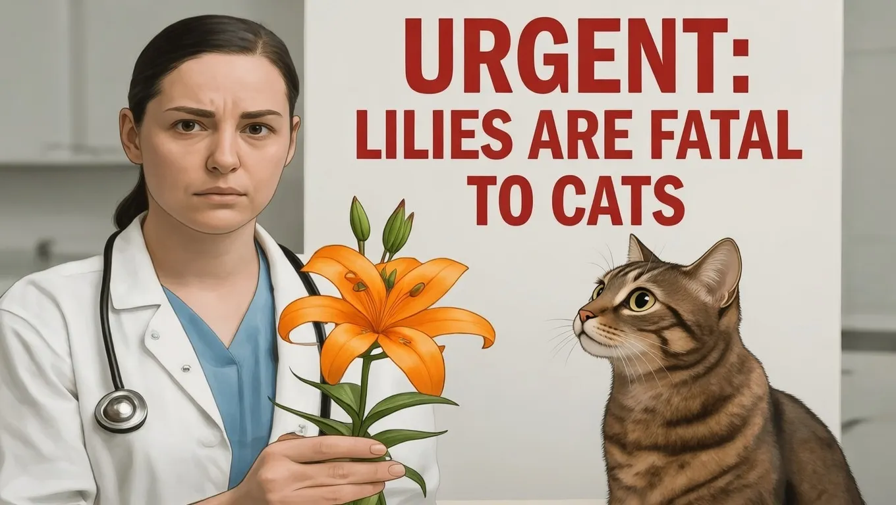

Critical Alert: Vets Issue Urgent Life-Saving Warning to All Cat Owners Immediately


Cat owners, beware: a critical health risk is lurking in the shadows, and it's essential to take immediate action to safeguard your feline friend's life. Veterinarians have issued a urgent warning, highlighting the importance of awareness and prompt intervention to prevent a potentially life-threatening situation. As a responsible cat owner, it's crucial to stay informed about the latest developments and take proactive steps to ensure your cat's well-being.
The warning comes as a reminder that even the most seemingly harmless substances or objects can pose a significant threat to your cat's health. Whether it's a toxic substance, a hazardous material, or an everyday item, the risks are real, and the consequences can be devastating. By understanding the potential dangers and taking simple yet effective precautions, you can significantly reduce the risk of harm to your cat and provide a safe and healthy environment for them to thrive.
Table of Contents
Understanding the Risks
One of the primary concerns for cat owners is the risk of toxic substances. These can range from household cleaning products and pesticides to certain types of food and plants. Even small amounts of these substances can be toxic to cats, causing a range of symptoms from mild discomfort to life-threatening conditions. It's essential to be aware of the potential risks and take steps to prevent accidental ingestion or exposure.
In addition to toxic substances, everyday objects can also pose a significant threat to your cat's health. For example, strings, ribbons, and other long, thin objects can cause intestinal blockages or strangulation if ingested. Similarly, small objects like batteries, coins, or other loose items can be easily swallowed, leading to serious health complications. By being mindful of these potential hazards and taking simple precautions, you can help prevent accidents and ensure your cat's safety.
Another critical aspect of cat care is providing a safe and healthy environment. This includes ensuring your cat has access to fresh water, a balanced diet, and regular veterinary check-ups. By staying on top of your cat's health and addressing any potential issues promptly, you can help prevent more serious problems from developing and provide your cat with the best possible quality of life.
Prevention and Intervention
So, what can you do to protect your cat from these potential risks? The first step is to be aware of the potential hazards and take steps to prevent accidental exposure or ingestion. This includes storing toxic substances and hazardous materials in a safe and secure location, out of reach of your cat. You should also be mindful of the types of objects and materials your cat has access to, removing any potential hazards from their environment.
In addition to prevention, it's essential to know what to do in case of an emergency. If you suspect your cat has ingested a toxic substance or object, it's crucial to act quickly and seek veterinary attention immediately. Your veterinarian can provide guidance on the best course of action and help you manage the situation effectively.
Regular veterinary check-ups are also vital in maintaining your cat's health and detecting any potential issues early on. By staying on top of your cat's health and addressing any concerns promptly, you can help prevent more serious problems from developing and ensure your cat receives the best possible care.
Also Read
More trending stories →Staying Informed and Proactive
As a responsible cat owner, it's essential to stay informed about the latest developments and potential risks to your cat's health. This includes staying up-to-date with the latest research, guidelines, and recommendations from veterinary experts. By being proactive and taking a proactive approach to your cat's health, you can help prevent accidents and ensure your cat receives the best possible care.
One way to stay informed is to consult with your veterinarian regularly. They can provide guidance on the best practices for cat care, help you identify potential risks, and offer advice on how to mitigate them. You can also consult reputable online resources, such as the American Animal Hospital Association or the International Cat Care website, for accurate and reliable information on cat health and care.
By working together with your veterinarian and staying informed, you can help ensure your cat leads a happy, healthy life. Remember, prevention and early intervention are key to protecting your cat's health and well-being.
Key Takeaways
- Be aware of the potential risks to your cat's health, including toxic substances and everyday objects.
- Take steps to prevent accidental exposure or ingestion, such as storing hazardous materials securely and removing potential hazards from your cat's environment.
- Stay informed about the latest developments and guidelines from veterinary experts, and consult with your veterinarian regularly to ensure your cat receives the best possible care.
Frequently Asked Questions
What are some common toxic substances that can harm my cat?
Common toxic substances that can harm your cat include household cleaning products, pesticides, certain types of food, and plants. It's essential to be aware of these potential risks and take steps to prevent accidental ingestion or exposure.
How can I prevent my cat from ingesting everyday objects?
To prevent your cat from ingesting everyday objects, it's essential to be mindful of the types of objects and materials your cat has access to. Remove any potential hazards from their environment, and consider using cat-proofing products to secure loose items.
What should I do if I suspect my cat has ingested a toxic substance or object?
If you suspect your cat has ingested a toxic substance or object, it's crucial to act quickly and seek veterinary attention immediately. Your veterinarian can provide guidance on the best course of action and help you manage the situation effectively.
Conclusion
By being aware of the potential risks to your cat's health and taking proactive steps to prevent accidents, you can help ensure your cat leads a happy, healthy life. Remember, prevention and early intervention are key to protecting your cat's health and well-being. Stay informed, consult with your veterinarian regularly, and take simple yet effective precautions to safeguard your cat's life.
Sarah Mitchell
Senior Tech Editor
Tech journalist with 8+ years of experience covering the latest in smartphones, EVs, AI, and consumer electronics. Bringing you accurate, well-researched stories from the world of technology.
Leave a Comment